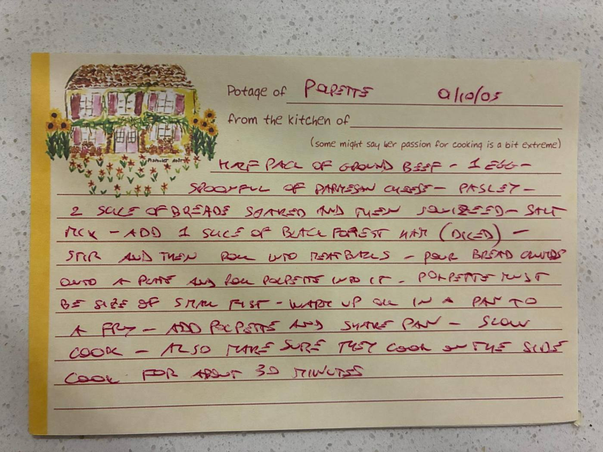

Mains
Polpette
Meatballs
From the kitchen of Mom
Cookabout 30 min
Sizesmall fist

Mom's original card · tap to enlarge
Ingredients
Method tap a step to mark it done
- Soak the bread in milk or water, then squeeze it out.
- Mix the ground beef, egg, Parmesan, parsley, bread and salt.
- Add the diced ham, stir, then roll into meatballs the size of a small fist.
- Pour bread crumbs onto a plate and roll the polpette in them.
- Heat oil in a pan until hot enough to fry. Add the polpette and shake the pan.
- Cook slowly, making sure they cook on all sides, for about 30 minutes.